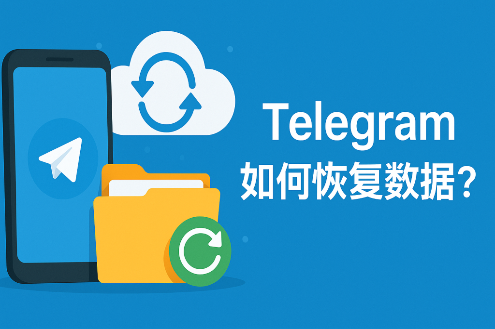

如何恢复Telegram数据？
要恢复Telegram数据，可以通过重新登录账号来同步聊天记录和媒体文件，因为Telegram的数据是云存储的。只需在新设备或重新安装的应用上登录你的Telegram账户，所有的聊天记录、文件和设置会自动恢复。如果你删除了聊天记录或数据，恢复的可能性较低，因为Telegram不提供手动备份恢复功能。

如何通过重新登录恢复Telegram数据
在新设备上同步Telegram聊天记录
自动云同步: Telegram的聊天记录和数据是存储在云端的，因此，当你在新设备上登录同一Telegram账号时，所有聊天记录、文件和媒体内容都会自动同步。只需安装Telegram应用，输入你的手机号码并完成验证码验证，系统会自动恢复你的数据，确保你的聊天历史不丢失。
支持多个设备同时登录: Telegram允许在多个设备上同时登录同一个账户，这意味着你可以在手机、平板和电脑之间同步所有的聊天记录和媒体文件。无论你在哪个设备上登录，聊天记录和文件都会保持一致。
无需手动备份: Telegram的云同步功能让用户无需手动备份数据。所有消息、文件、图片和设置都会自动存储在Telegram的云服务器上，因此，只要重新登录账号，所有内容都会恢复，节省了备份和恢复的麻烦。
恢复Telegram数据时需要注意的事项
确保账户信息正确: 在重新登录并恢复Telegram数据时，务必确保输入正确的手机号码和验证码。如果输入的电话号码或验证码错误，可能会导致无法访问账户或同步数据。
数据同步的时间: 恢复过程可能会因数据量不同而有所延迟。大量的聊天记录和文件需要一些时间来同步，特别是在使用较慢的网络连接时。确保你的设备与网络稳定，避免同步过程中出现中断或失败。
检查设备设置: 为确保数据能够顺利恢复，在新设备上使用Telegram时，请检查设备的操作系统和Telegram应用版本是否为最新。更新Telegram应用到最新版，以确保兼容并支持所有最新的功能。
Telegram云存储数据恢复方法
如何确保Telegram数据同步到云端
启用自动同步功能: Telegram会自动同步聊天记录和文件到云端，无需用户手动操作。确保你在“设置”中启用了自动下载和同步功能，Telegram会在每次联网时自动同步消息、图片和视频。通过这种方式，所有数据都实时保存在Telegram的云端。
使用同一账户登录: 只要使用相同的手机号登录Telegram，所有聊天记录、文件和媒体会自动同步到新设备。无需手动上传或备份，数据会随着登录操作自动恢复。
定期检查数据同步设置: 在“设置”>“数据与存储”中，可以检查Telegram是否正在正确同步数据。确保你没有关闭“自动同步”和“自动下载”功能，尤其是在数据流量管理较严格的情况下，确保云端同步不会受限。
使用云端恢复Telegram消息和文件
通过重新登录恢复数据: 如果你换了设备或卸载了Telegram，只需重新登录到同一Telegram账户，所有的聊天记录和文件都会自动从云端恢复到新设备上。只要网络连接稳定，Telegram会自动同步数据。
访问历史消息和媒体: 在Telegram中，你可以随时通过“聊天”界面访问已同步的消息和文件。所有媒体文件、图片、视频和文档都存储在云端，并且可以随时下载或查看，无论你在哪个设备上登录。
查看已同步的消息和文件: 云端同步的消息和文件会在所有设备上保持一致，因此你不必担心数据丢失。你可以随时查看历史消息，下载文件，或上传新的文件，这些操作都会被同步到云端，保证数据安全。
恢复Telegram聊天记录的最佳实践
在更换设备时恢复聊天记录
确保同一账户登录: 在更换设备时，确保你使用相同的手机号码和Telegram账号登录。因为Telegram的聊天记录和文件都存储在云端，只要登录相同账户，所有的聊天记录和媒体文件都会自动同步到新设备上。
保持网络连接稳定: 在恢复聊天记录时，确保你的设备连接到稳定的网络。数据同步过程需要一定的网络带宽和时间，稳定的Wi-Fi或移动数据连接能加快恢复速度，避免中断。
检查云同步设置: 更换设备后，进入Telegram的“设置”>“数据与存储”，确保“自动同步”功能已开启。这样，所有数据将自动同步，无需手动操作即可恢复聊天记录。
使用Telegram的同步功能恢复聊天数据
自动同步聊天记录: Telegram的云同步功能会自动将你的聊天记录、文件和媒体存储到云端。只要登录同一个账户，所有历史记录会自动从云端恢复到新设备。
恢复聊天记录时的时间选择: 如果你使用了多个设备，可以在每个设备上查看聊天记录，Telegram会确保数据在所有设备上同步一致。当你从云端恢复数据时，可以随时查看历史聊天记录和文件。
使用搜索功能恢复消息: 如果在恢复数据后需要查找特定的消息或文件，Telegram提供了强大的搜索功能。你可以通过输入关键词、日期或媒体类型等进行快速搜索，找到丢失的聊天记录。

如何恢复Telegram已删除的消息和文件
恢复删除聊天记录的可行性
无法恢复删除的聊天记录: 一旦你在Telegram中删除了聊天记录，尤其是本地删除，Telegram无法恢复这些消息。Telegram的云端存储功能只会保存未删除的消息。如果聊天记录被你或对方删除，它们将永久丧失。
通过备份恢复: 如果你曾经导出或备份过Telegram的数据，通过备份文件可能恢复部分聊天记录。Telegram并没有内置的本地备份功能，但第三方应用或服务可能允许用户导出和备份聊天记录。
利用同步功能查看历史记录: 如果只是误删除了某些消息，Telegram的云同步功能有时能让你通过不同设备查看到之前的数据，尤其是当你使用多个设备登录时，某些未同步的数据可能仍然可见。
使用Telegram的备份功能恢复文件
导出Telegram数据: 虽然Telegram没有直接的恢复已删除文件功能，但你可以通过桌面版Telegram的导出功能将数据导出并备份。在“设置”>“高级”>“导出Telegram数据”中，你可以选择导出聊天记录、文件和媒体，方便日后恢复。
备份聊天记录和媒体: 通过导出数据功能，你可以选择包括图片、视频、文档等所有文件进行备份。导出后的文件保存在本地，确保即使删除了Telegram中的文件，依然能够恢复它们。
恢复备份文件: 如果你事先已将Telegram的文件或聊天记录备份到云存储或其他位置，恢复这些文件会非常简单。只需将备份文件导入或上传到设备即可恢复丢失的文件和消息。
如何通过备份恢复Telegram数据
手动导出并备份Telegram数据的步骤
打开Telegram桌面版: 首先，下载Telegram桌面版应用。打开应用并登录到你的账户。
进入设置并选择导出数据: 在Telegram桌面版，点击左上角的菜单图标，选择“设置”>“高级”>“导出Telegram数据”。进入导出页面后，你可以选择需要备份的数据类型，如聊天记录、文件、图片和视频。
选择保存位置: 在导出数据时，Telegram会让你选择保存文件的格式（如HTML或JSON）。你可以根据需要选择合适的格式并指定文件保存的位置。导出过程会自动进行，完成后你将得到一个包含所有备份数据的文件夹。
恢复备份的Telegram聊天记录和文件
重新登录Telegram账户: 在恢复Telegram数据时，首先需要在新设备或重新安装的Telegram应用上登录你的账号。只要使用相同的账户，聊天记录和文件将自动同步到新设备。
导入备份文件: 如果你之前手动导出过Telegram数据并保存了备份文件，可以通过导入这些文件恢复数据。虽然Telegram不提供直接的恢复功能，但你可以使用导出文件的方式查看备份的聊天记录和文件。
使用云端同步恢复数据: 如果你没有手动备份，Telegram会根据云同步自动恢复数据。只要登录到Telegram账户，云端存储的聊天记录和文件将自动恢复，无需手动操作。
Telegram聊天记录删除后还能恢复吗？
如何恢复Telegram中的文件和媒体？
是否可以通过Telegram的备份功能恢复聊天数据？
Telegram中文 其他新闻
安卓telegram怎么扫码？
在安卓设备上使用Telegram扫描二维码，首先确保你的设备已安装最新版Telegram。打开应用，选择右上角 […]
怎么查看自己的电报ID？
要查看自己的Telegram ID，你可以使用第三方机器人，如 @userinfobot。在Telegram中 […]

飞机怎么艾特所有人？
在Telegram（通常被称为“纸飞机”）的群组聊天中，要艾特所有人，可以使用“@all”这个提及。只需在消息 […]
Telegram可以删除对方的聊天记录吗？
是的，Telegram允许用户删除双方的聊天记录。你可以选择删除自己的聊天窗口中的消息，也可以选择同时从你和对 […]